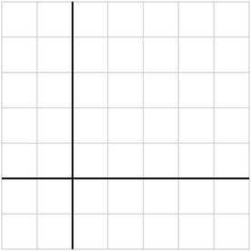
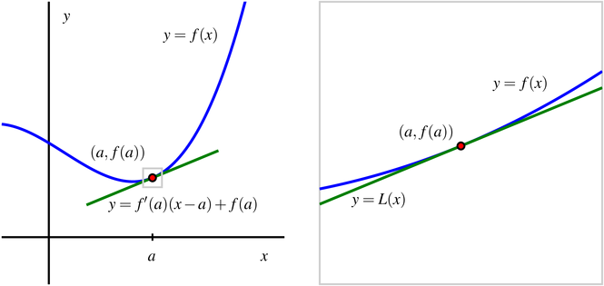
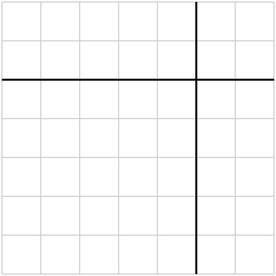
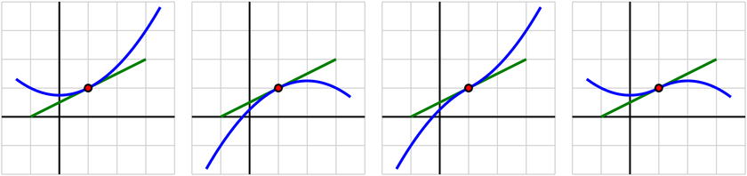
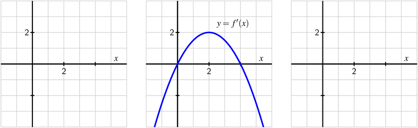

Section1.8The Tangent Line Approximation¶ permalink
{In this section, we strive to understand the ideas generated by the following important questions:
What is the formula for the general tangent line approximation to a differentiable function \(y = f(x)\) at the point \((a,f(a))\)?
What is the principle of local linearity and what is the local linearization of a differentiable function \(f\) at a point \((a,f(a))\)?
How does knowing just the tangent line approximation tell us information about the behavior of the original function itself near the point of approximation? How does knowing the second derivative's value at this point provide us additional knowledge of the original function's behavior?
}
Subsection1.8.1Introduction
Among all functions, linear functions are simplest. One of the powerful consequences of a function \(y = f(x)\) being differentiable at a point \((a,f(a))\) is that, up close, the function \(y = f(x)\) is locally linear and looks like its tangent line at that point. In certain circumstances, this allows us to approximate the original function \(f\) with a simpler function \(L\) that is linear: this can be advantageous when we have limited information about \(f\) or when \(f\) is computationally or algebraically complicated. We will explore all of these situations in what follows.
It is essential to recall that when \(f\) is differentiable at \(x = a\), the value of \(f'(a)\) provides the slope of the tangent line to \(y = f(x)\) at the point \((a,f(a))\). By knowing both a point on the line and the slope of the line we are thus able to find the equation of the tangent line. Preview Activity will refresh these concepts through a key example and set the stage for further study.
Preview Activity
Consider the function \(y = g(x) = -x^2+3x+2\).
Figure1.8.1Axes for plotting \(y = g(x)\) and its tangent line to the point \((2,g(2))\).
Use the limit definition of the derivative to compute a formula for \(y = g'(x)\).
Determine the slope of the tangent line to \(y = g(x)\) at the value \(x = 2\).
Compute \(g(2)\).
Find an equation for the tangent line to \(y = g(x)\) at the point \((2,g(2))\). Write your result in point-slope form 1 Recall that a line with slope \(m\) that passes through \((x_0,y_0)\) has equation \(y - y_0 = m(x - x_0)\), and this is the point-slope form of the equation..
On the axes provided in Figure 1.8.1, sketch an accurate, labeled graph of \(y = g(x)\) along with its tangent line at the point \((2,g(2))\).
Given a function \(f\) that is differentiable at \(x = a\), we know that we can determine the slope of the tangent line to \(y = f(x)\) at \((a,f(a))\) by computing \(f'(a)\). The resulting tangent line through \((a,f(a))\) with slope \(m = f'(a)\) has its equation in point-slope form given by
\[
y - f(a) = f'(a)(x-a),
\]
which we can also express as \(y = f'(a)(x-a) + f(a)\). Note well: there is a major difference between \(f(a)\) and \(f(x)\) in this context. The former is a constant that results from using the given fixed value of \(a\), while the latter is the general expression for the rule that defines the function. The same is true for \(f'(a)\) and \(f'(x)\): we must carefully distinguish between these expressions. Each time we find the tangent line, we need to evaluate the function and its derivative at a fixed \(a\)-value.
Figure1.8.2A function \(y = f(x)\) and its tangent line at the point \((a,f(a))\): at left, from a distance, and at right, up close. At right, we label the tangent line function by \(y = L(x)\) and observe that for \(x \) near \(a\), \(f(x) \approx L(x)\).
In Figure 1.8.2, we see a labeled plot of the graph of a function \(f\) and its tangent line at the point \((a,f(a))\). Notice how when we zoom in we see the local linearity of \(f\) more clearly highlighted as the function and its tangent line are nearly indistinguishable up close. This can also be seen dynamically in the java applet at \href{http://gvsu.edu/s/6J}{http://gvsu.edu/s/6J}.
A slight change in perspective and notation will enable us to be more precise in discussing how the tangent line to \(y = f(x)\) at \((a,f(a))\) approximates \(f\) near \(x = a\). Taking the equation for the tangent line and solving for \(y\), we observe that the tangent line is given by
\[
y = f'(a)(x-a) + f(a)
\]
and moreover that this line is itself a function of \(x\). Replacing the variable \(y\) with the expression \(L(x)\), we call
\[
L(x) = f'(a)(x-a) + f(a)
\]
the local linearization of \(f\) at the point \((a,f(a))\). In this notation, it is particularly important to observe that \(L(x)\) is nothing more than a new name for the tangent line, and that for \(x\) close to \(a\), we have that \(f(x) \approx L(x)\).
Say, for example, that we know that a function \(y = f(x)\) has its tangent line approximation given by \(L(x) = 3 - 2(x-1)\) at the point \((1,3)\), but we do not know anything else about the function \(f\). If we are interested in estimating a value of \(f(x)\) for \(x\) near 1, such as \(f(1.2)\), we can use the fact that \(f(1.2) \approx L(1.2)\) and hence
Again, much of the new perspective here is only in notation since \(y = L(x)\) is simply a new name for the tangent line function. In light of this new notation and our observations above, we note that since \(L(x) = f(a) + f'(a)(x-a)\) and \(L(x) \approx f(x)\) for \(x\) near \(a\), it also follows that we can write
\[
f(x) \approx f(a) + f'(a)(x-a) \ \mbox{for} \ x \ \mbox{near} \ a.
\]
The next activity explores some additional important properties of the local linearization \(y = L(x)\) to a function \(f\) at given \(a\)-value.
Suppose it is known that for a given differentiable function \(y = g(x)\), its local linearization at the point where \(a = -1\) is given by \(L(x) = -2 + 3(x+1)\).
Compute the values of \(L(-1)\) and \(L'(-1)\).
What must be the values of \(g(-1)\) and \(g'(-1)\)? Why?
Do you expect the value of \(g(-1.03)\) to be greater than or less than the value of \(g(-1)\)? Why?
Use the local linearization to estimate the value of \(g(-1.03)\).
Suppose that you also know that \(g''(-1) = 2.\) What does this tell you about the graph of \(y = g(x)\) at \(a = -1\)?
For \(x\) near \(-1\), sketch the graph of the local linearization \(y = L(x)\) as well as a possible graph of \(y = g(x)\) on the axes provided in Figure 1.8.4.
Figure1.8.4Axes for plotting \(y = L(x)\) and \(y = g(x)\).
Follow the rule for \(L\) and note that you can easily compute \(L'(x)\).
Recall that the form of the local linearization is \(L(x) = g(a) + g'(a)(x-a)\). What is the value of \(a\) for the given function \(L\)?
Observe that the value of \(g'(-1)\) tells you whether the function \(g\) increasing or decreasing at \(a = -1\).
Remember that \(g(-1.03) \approx L(-1.03)\) and you know a rule for \(L(x)\).
What does a positive second derivative tell you about the shape of a curve at a point?
Use your work above, and think about the value, slope, and concavity of \(y = g(x)\) at \(a = -1\).
As we saw in the example provided by Activity 1.8.3, the local linearization \(y = L(x)\) is a linear function that shares two important values with the function \(y = f(x)\) that it is derived from. In particular, observe that since \(L(x) = f(a) + f'(a)(x-a)\), it follows that \(L(a) = f(a)\). In addition, since \(L\) is a linear function, its derivative is its slope. Hence, \(L'(x) = f'(a)\) for every value of \(x\), and specifically \(L'(a) = f'(a)\). Therefore, we see that \(L\) is a linear function that has both the same value and the same slope as the function \(f\) at the point \((a,f(a))\).
In situations where we know the linear approximation \(y = L(x)\), we therefore know the original function's value and slope at the point of tangency. What remains unknown, however, is the shape of the function \(f\) at the point of tangency. There are essentially four possibilities, as enumerated in Figure 1.8.5.
Figure1.8.5Four possible graphs for a nonlinear differentiable function and how it can be situated relative to its tangent line at a point.
These stem from the fact that there are three options for the value of the second derivative: either \(f''(a) \lt 0\), \(f''(a) = 0\), or \(f''(a) > 0\). If \(f''(a) > 0\), then we know the graph of \(f\) is concave up, and we see the first possibility on the left, where the tangent line lies entirely below the curve. If \(f''(a) \lt 0\), then we find ourselves in the second situation (from left) where \(f\) is concave down and the tangent line lies above the curve. In the situation where \(f''(a) = 0\) and \(f''\) changes sign at \(x = a\), the concavity of the graph will change, and we will see either the third or fourth option 2 It is possible to have \(f''(a) = 0\) and have \(f''\) not change sign at \(x = a\), in which case the graph will look like one of the first two options.. A fifth option (that is not very interesting) can occur, which is where the function \(f\) is linear, and so \(f(x) = L(x)\) for all values of \(x\).
The plots in Figure 1.8.5 highlight yet another important thing that we can learn from the concavity of the graph near the point of tangency: whether the tangent line lies above or below the curve itself. This is key because it tells us whether or not the tangent line approximation's values will be too large or too small in comparison to the true value of \(f\). For instance, in the first situation in the leftmost plot in Figure 1.8.5 where \(f''(a) > 0\), since the tangent line falls below the curve, we know that \(L(x) \le f(x)\) for all values of \(x\) near \(a\).
We explore these ideas further in the following activity.
Figure1.8.7At center, a graph of \(y = f'(x)\); at left, axes for plotting \(y = f(x)\); at right, axes for plotting \(y = f''(x)\).
Your task is to determine as much information as possible about \(f\) (especially near the value \(a = 2\)) by responding to the questions below.
Find a formula for the tangent line approximation, \(L(x)\), to \(f\) at the point \((2,-1)\).
Use the tangent line approximation to estimate the value of \(f(2.07)\). Show your work carefully and clearly.
Sketch a graph of \(y = f''(x)\) on the righthand grid in Figure 1.8.7; label it appropriately.
Is the slope of the tangent line to \(y = f(x)\) increasing, decreasing, or neither when \(x = 2\)? Explain.
Sketch a possible graph of \(y = f(x)\) near \(x = 2\) on the lefthand grid in Figure 1.8.7. Include a sketch of \(y=L(x)\) (found in part (a)). Explain how you know the graph of \(y = f(x)\) looks like you have drawn it.
Does your estimate in (b) over- or under-estimate the true value of \(f(2)\)? Why?
Find the value of \(f'(2)\) from the given graph of \(f\), and note that you are given that \(f(2) = -1\).
Remember that \(f(2.07) \approx L(2.07)\).
The graph of \(y = f''(x)\) is the derivative of the graph of \(y = f'(x)\). Where must \(f''(x) = 0\)? Where is \(f''(x)\) positive?
Is \(f'\) increasing, decreasing, or neither when \(x = 2\)? Use the given graph of \(y = f'(x)\) to help you decide.
Draw \(y = L(x)\) first. Then think about options for \(f\) relative to the graph of \(L\). Is \(f\) concave up or concave down before \(x = 2\)? after \(x = 2\)?
Does the tangent line lie above or below the graph of \(y = f(x)\) at \((2,3)\)? You may have to consider values less than \(x = 2\) and values greater than \(x = 2\).
Since \(f(2) = -1\) and \(f'(2) = 2\), we have \(L(x) = -1 + 2(x-2)\).
Using our work in (a), \(f(2.07) \approx L(2.07) = -1 + 2(2.07-2) = -1 + 2\cdot 0.07 = -0.86\).
See the plot below.
Is the slope of the tangent line to \(y = f(x)\) is increasing for \(x \lt 2\) because \(y = f'(x)\) is an increasing function on this interval. Similarly, for \(x > 2\), the slope of the tangent line to \(y = f(x)\) is decreasing. Right at \(x = 2\), the slope of the tangent line to \(y = f(x)\) is neither increasing nor decreasing.
See the plot below. Note that \(y = f(x)\) is concave up for \(x \lt 2\) since \(f'\) is increasing on that interval, and \(y = f(x)\) is concave down for \(x > 2\) since \(f'\) is decreasing there. Hence \(y = f(x)\) changes from concave up to concave down right at \(x = 2\), which is also the point near 2 where the graph of \(y = f(x)\) is steepest.
Because the tangent line to \(y = f(x)\) lies above the graph of \(f\) to the right of \(x = 2\), our estimate of \(f(2.07)\) is too large – the local linearization overshoots the true value of \(f\) at this point.
The idea that a differentiable function looks linear and can be well-approximated by a linear function is an important one that finds wide application in calculus. For example, by approximating a function with its local linearization, it is possible to develop an effective algorithm to estimate the zeroes of a function. Local linearity also helps us to make further sense of certain challenging limits. For instance, we have seen that a limit such as
\[
\lim_{x \to 0} \frac{\sin(x)}{x}
\]
is indeterminate because both its numerator and denominator tend to 0. While there is no algebra that we can do to simplify \(\frac{\sin(x)}{x}\), it is straightforward to show that the linearization of \(f(x) = \sin(x)\) at the point \((0,0)\) is given by \(L(x) = x\). Hence, for values of \(x\) near 0, \(\sin(x) \approx x\). As such, for values of \(x\) near 0,
\[
\frac{\sin(x)}{x} \approx \frac{x}{x} = 1,
\]
which makes plausible the fact that
\[
\lim_{x \to 0} \frac{\sin(x)}{x} = 1.
\]
These ideas and other applications of local linearity will be explored later on in our work.
\begin{authornote}
This is an author note.
\end{authornote}
\item The tangent line to a differentiable function \(y = f(x)\) at the point \((a,f(a))\) is given in point-slope form by the equation
\[
y - f(a) = f'(a)(x-a).
\]
\item The principle of local linearity tells us that if we zoom in on a point where a function \(y = f(x)\) is differentiable, the function should become indistinguishable from its tangent line. That is, a differentiable function looks linear when viewed up close. We rename the tangent line to be the function \(y = L(x)\) where \(L(x) = f(a) + f'(a)(x-a)\) and note that \(f(x) \approx L(x)\) for all \(x\) near \(x = a\).
\item If we know the tangent line approximation \(L(x) = f(a) + f'(a)(x-a)\), then because \(L(a) = f(a)\) and \(L'(a) = f'(a)\), we also know both the value and the derivative of the function \(y = f(x)\) at the point where \(x = a\). In other words, the linear approximation tells us the height and slope of the original function. If, in addition, we know the value of \(f''(a)\), we then know whether the tangent line lies above or below the graph of \(y = f(x)\) depending on the concavity of \(f\).
\hrulefill
\begin{exercises}
\item A certain function \(y=p(x)\) has its local linearization at \(a = 3\) given by \(L(x) = -2x + 5\).
What are the values of \(p(3)\) and \(p'(3)\)? Why?
Estimate the value of \(p(2.79)\).
Suppose that \(p''(3) = 0\) and you know that \(p''(x) \lt 0\) for \(x \lt 3\). Is your estimate in (b) too large or too small?
Suppose that \(p''(x) > 0\) for \(x > 3\). Use this fact and the additional information above to sketch an accurate graph of \(y = p(x)\) near \(x = 3\). Include a sketch of \(y = L(x)\) in your work.
\item A potato is placed in an oven, and the potato's temperature \(F\) (in degrees Fahrenheit) at various points in time is taken and recorded in the following table. Time \(t\) is measured in minutes.
Use a central difference to estimate \(F'(60)\). Use this estimate as needed in subsequent questions.
Find the local linearization \(y = L(t)\) to the function \(y = F(t)\) at the point where \(a = 60\).
Determine an estimate for \(F(63)\) by employing the local linearization.
Do you think your estimate in (c) is too large or too small? Why?
\item An object moving along a straight line path has a differentiable position function \(y = s(t)\). It is known that at time \(t = 9\) seconds, the object's position is \(s = 4\) feet (measured from its starting point at \(t = 0\)). Furthermore, the object's instantaneous velocity at \(t = 9\) is \(-1.2\) feet per second, and its acceleration at the same instant is \(0.08\) feet per second per second.
Use local linearity to estimate the position of the object at \(t = 9.34\).
Is your estimate likely too large or too small? Why?
In everyday language, describe the behavior of the moving object at \(t = 9\). Is it moving toward its starting point or away from it? Is its velocity increasing or decreasing?
\item For a certain function \(f\), its derivative is known to be \(f'(x) = (x-1)e^{-x^2}\). Note that you do not know a formula for \(y = f(x)\).
At what \(x\)-value(s) is \(f'(x) = 0\)? Justify your answer algebraically, but include a graph of \(f'\) to support your conclusion.
Reasoning graphically, for what intervals of \(x\)-values is \(f''(x) > 0\)? What does this tell you about the behavior of the original function \(f\)? Explain.
Assuming that \(f(2) = -3\), estimate the value of \(f(1.88)\) by finding and using the tangent line approximation to \(f\) at \(x=2\). Is your estimate larger or smaller than the true value of \(f(1.88)\)? Justify your answer.